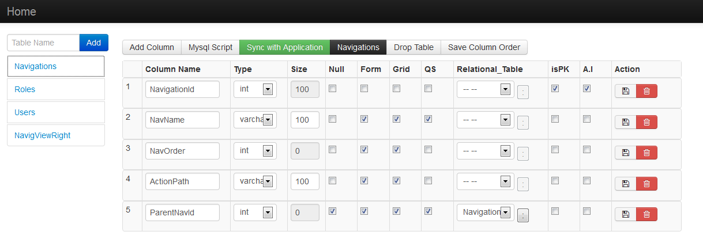
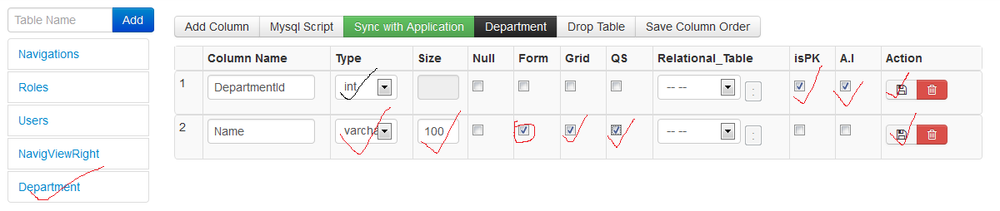
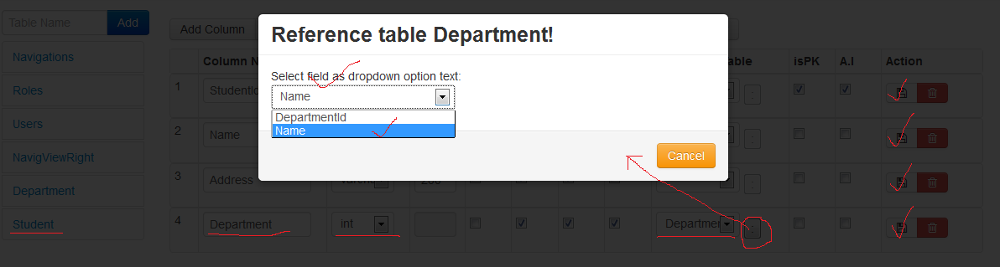
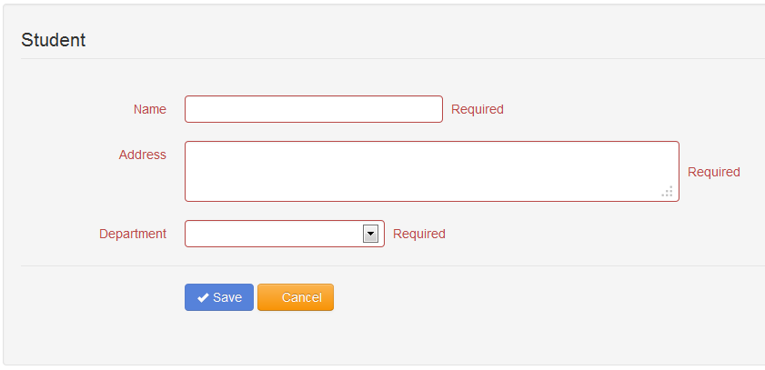
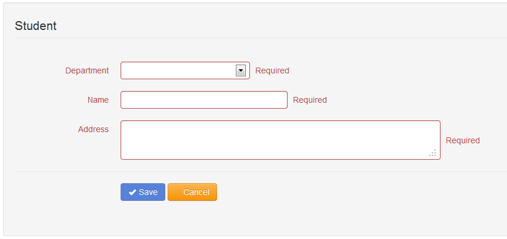
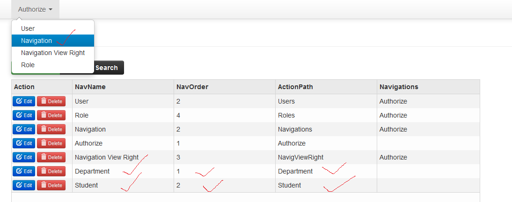
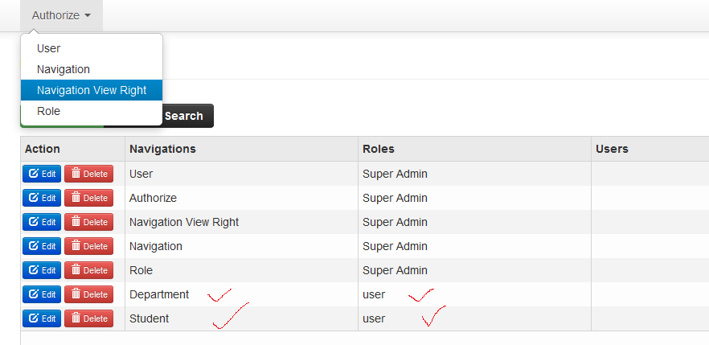

Assuming that our application name is oxygen. So create a folder named oxygen in htdocs and put all the extracted content there.
You will find a SQL file named 'sampledb' into the oxygen folder. Run the script in phpMyAdmin. Now we need to configure the database connecton string. To configure the database please open the file at oxygen/application/config/database.php and set the configuration like bellow:
$db['default']['hostname'] = 'localhost'; $db['default']['username'] = 'root'; $db['default']['password'] = ''; $db['default']['database'] = 'sampledb'; $db['default']['dbdriver'] = 'mysql';
JCrud::$HOST="127.0.0.1"; JCrud::$DBNAME="sampledb"; JCrud::$USER="root"; JCrud::$PASS="";
Browse this link http://localhost/oxygen. Login page will appear, please give the user name:'admin' and password: 'admin'. This user's Role is 'Super Admin' . He can authorize others.
Now you get a Authorize menu and it's submenu User , Navigation , Navigation View Right , and Role. Browse all of them.
If you click on the user navigation submenu. You will see there are two users. Now our task is we shall have tow pages named ( Department ,Student ) and autorize those pages to the users who belong to specific Role.
Now question is how we shall do this ? Ans: Its very easy to do. Just we use code generator that has been embedded with oxygen and clicking some stuff and your task is done.
Browse this link http://localhost/oxygen/tools. If we click on the Navigations table name, all the columns will appear just like following figure  Now we can add tables add their columns , and we can configure the column set as form, grid, quick search, relational table and how the relational table bind with drop-down list and so on.
Add Department table and its two columns 'DepartmentId' , 'Name' -- set the columns as the following figure  Same way add the student table. Student table has the relation with Department table. see the following figure  Now select Department table and click on Sync with Application button and also select Student table and click on Sync with Application button. Code generation has been completed.
One important thing is that if we see student form it looks like following  if you want to change the form fields order like the following image, you need to apply the drag and drop functionality reordering the columns and then click on the Save Column Order button -- now your columns order saved. Also click on the Sync with Application button regenerate the code for Student table 
Browse this link http://localhost/oxygen. Login as Super admin where user name and password are 'admin' Click on the Navigation menu add two Navigation : Department and Student like the following figure. Keep in mind that Actio Path is case sensative and action Path should be exactly table name. 
Click on the Navigation View Right menu add two Authorizations like the following figure.  Now Navigations and authorization are done. Logout and login with such a user whose Role is 'user'. If login is successfully you will have two menu named 'Department' and 'Student'. Now you can insert, update, delete, and search them... Note: There is a user who is belongs to 'user' Role whose user name:'user' and password:'user'